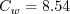
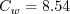

Public Access (formerly Langley Research Center)Turbulence Modeling Resource |
The Wray-Agarwal Turbulence Model
This web page gives detailed information
on the equations for the Wray-Agarwal one-equation turbulence model.
It is a linear eddy viscosity models.
Linear models use the Boussinesq assumption for the constitutive relation:
where the last term is generally ignored for one-equation models like this one
because k is not readily available (the term
is sometimes ignored for non-supersonic speed flows for other models as well).
Unless otherwise stated, for compressible flow with heat transfer this model is implemented as described on the page
Implementing Turbulence Models into the Compressible RANS Equations, with perfect gas
assumed and Pr = 0.72, Prt = 0.90, and Sutherland's law for dynamic viscosity.
Return to: Turbulence Modeling Resource Home Page Wray-Agarwal One-Equation Model
(WA-2018)
The WA one-equation model was derived from a k-omega closure, and has gone through several iterations to
date. The original Journal reference for it is: Wray, T. J., Agarwal, R. K., "Low-Reynolds-Number One-Equation
Turbulence Model Based on a k-omega Closure," AIAA Journal, Vol. 53, No. 8, 2015, pp. 2216-2227,
https://doi.org/10.2514/1.J053632 (which had
an inconsistency in dimensional units in its arg1 equation). However, the
latest version (as recommended by the authors) is wall-distance free and varies from its description in the Journal.
It is described in:
The model solves for the variable R, using the following equation:
The turbulent eddy viscosity is:
with The authors used
where where
The constants are:
Boundary conditions at solid smooth walls are:
and for the freestream, the authors recommend:
Wray-Agarwal One-Equation Model
(WA-2017)
The 2017 version of the WA model is described in:
Note that there was a typo in eq (6) of the original version of the above paper, but
the online version has been corrected as of 8/10/2017. Note also that although the
above reference includes a detached eddy simulation (DES) form of the model, here we only
describe the RANS form of the model.
This version of the model is different from the (WA-2018) model in the following
ways: (1) one of the terms in the R-equation is different, (2) the f1 is different, and (3) there are
a few new/changed constants. For completeness, the WA-2017 model is given here in its entirety.
The model solves for the variable R, using the following equation:
This equation is the same as the (WA-2018) model, except for the
last term. The turbulent eddy viscosity is:
with The authors used
where and
where d is the minimum distance to the nearest wall.
The constants are:
Boundary conditions at solid smooth walls are:
and for the freestream, the authors recommend:
Return to: Turbulence Modeling Resource Home Page
Recent significant updates:

![\frac{\partial R}{\partial t} + \frac{\partial u_j R}{\partial x_j}
= \frac{\partial}{\partial x_j} \left[(\sigma_R R + \nu) \frac{\partial R}{\partial x_j} \right]
+C_1RS + f_1 C_{2k\omega} \frac{R}{S} \frac{\partial R}{\partial x_j} \frac{\partial S}{\partial x_j}
-(1-f_1)\rm{min} \left[
C_{2k\epsilon}R^2 \left(\frac{\frac{\partial S}{\partial x_j} \frac{\partial S}{\partial x_j}}{S^2} \right),
C_m\frac{\partial R}{\partial x_j}\frac{\partial R}{\partial x_j} \right]](wray_agarwal_eqns2018/img2.png)
 the density.
S takes on the usual definition for mean strain:
the density.
S takes on the usual definition for mean strain:


 to avoid division by zero (private communication).
Wall blocking is accounted for by the damping function:
to avoid division by zero (private communication).
Wall blocking is accounted for by the damping function:
 and
.
The wall-distance-free switching function is:
and
.
The wall-distance-free switching function is:


 



![\frac{\partial R}{\partial t} + \frac{\partial u_j R}{\partial x_j}
= \frac{\partial}{\partial x_j} \left[(\sigma_R R + \nu) \frac{\partial R}{\partial x_j} \right]
+C_1RS + f_1 C_{2k\omega} \frac{R}{S} \frac{\partial R}{\partial x_j} \frac{\partial S}{\partial x_j}
-(1-f_1)C_{2k\epsilon}R^2 \left(\frac{\frac{\partial S}{\partial x_j} \frac{\partial S}{\partial x_j}}{S^2} \right)](wray_agarwal_eqns/img2.png)

 the density.
S takes on the usual definition for mean strain:
the density.
S takes on the usual definition for mean strain:

 to avoid division by zero (private communication).
Wall blocking is accounted for by the damping function:
to avoid division by zero (private communication).
Wall blocking is accounted for by the damping function:

 .
The switching function is:
.
The switching function is:
![arg_1 = \frac{1+ \frac{d \sqrt{RS}}{\nu}}{1+
\left[ \frac{\rm{max}(d \sqrt{RS}, 1.5 R)}{20 \nu} \right]^2}](wray_agarwal_eqns/img10.png)


05/16/2018 - added WA-2018 model description
Page Curators: Christopher Rumsey,
Ethan Vogel,
Clark Pederson
Last Updated: 11/08/2021